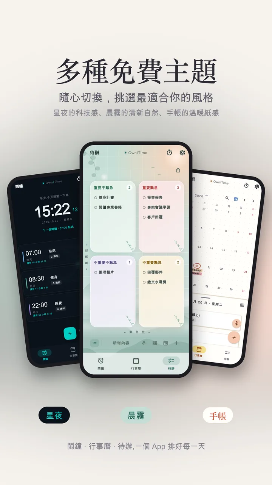

共用行事曆
把行事曆分享給家人、另一半或同事，兩個人都能新增和修改。
- 可以只讓對方看到「忙碌」，不透露內容
- 經期、待辦和紀念日不會被分享出去
- 跨日的旅行用一條色帶連起來
OwnITime 把共用行事曆、待辦四象限和語音鬧鐘放在一起。和家人或另一半對好時間，分清楚先做什麼，想到的事用說的就記下來。網頁上的示範手機是 App 的實際畫面，可以直接點，看看合不合你的生活。
Android 版。免費下載，部分功能需訂閱。
手機裡的按鈕都能點，底部可以切換鬧鐘、行事曆、待辦

用的是 App 裡同一套解析規則。語音由你的瀏覽器辨識（Chrome 會交給 Google、Safari 交給 Apple），這個網站不會保存。
手機裡是 App 的實際畫面，用的是示範資料。共用的部分要兩個人都登入才看得到，這裡用文字說明。
把行事曆分享給家人、另一半或同事，兩個人都能新增和修改。
依「重要」和「緊急」把待辦分成四格，一眼看出現在該先做哪件。
說一句話，就建好鬧鐘或行程，不用點開日期、再選時間。
手上都是東西，不想點開 App 一格一格選。按住麥克風說完，鬧鐘就排好了。
按麥克風，用平常說話的方式講出時間和事情。
OwnITime 判斷這是鬧鐘、行程還是待辦，填好日期和時間。
確認一眼就完成。要改再點進去調整。
不用為每件事各裝一支 App。想用哪個就打開哪個，不需要的可以收起來。
在同一本月曆上逐天記錄，依你的紀錄推估下一次，也能提前幾天提醒。
每幾天循環一次，從你指定的那天開始算。只想讓某天不響，關掉那一次就好。
紀念日記在月曆上，到了那天不會忘。
訂閱功能好幾道菜同時倒數，幫你算好每道什麼時候下鍋，一起上桌。
記錄部位、組數、重量和次數，組間休息自動倒數。
部分需訂閱月曆可以顯示農曆，國定假日自動標出來。
坐太久就提醒你起來走走，循環計時不用一直重設。
支援 .ics 檔，從別的行事曆搬過來不用一筆一筆重打。
從清新的晨霧、溫暖的手帳紙感，到夜裡安靜的星夜。多種免費主題，隨時切換。這個網頁也會跟著你的手機切換淺色和深色。

資料存在你自己的手機裡，沒有網路照樣能看、能改。
備份檔放在你自己的 Google 雲端硬碟，看得到也下載得走。
匯出成一個檔案，到新手機再匯入就好。
不想用了，在 App 裡就能刪除帳號和雲端資料。
免費下載，鬧鐘、行事曆、待辦、語音建立都能免費使用。交往紀念日、週檢視等部分功能需要訂閱，健身與煮飯計時免費版有次數上限。
目前只有 Android 版，在 Google Play 下載。
要。雙方都裝好之後，掃 QR 碼加入，對方同意後就能看到你分享的行程。
看不到。分享只包含行事曆上的行程，經期、待辦、鬧鐘和紀念日都不會被分享出去。
有網路時辨識比較準；沒有網路時會改用手機內建的辨識。